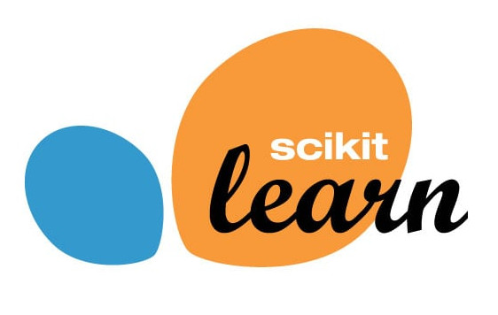

TICS-411 Minería de Datos
Práctico 0: Introducción a Scikit-Learn
¿Qué es Scikit-Learn?

Scikit-Learn(sklearnpara los amigos) es una librería creada por David Cournapeau, como un Google Summer Code Project y luego Matthieu Brucher en su tesis.- En 2010 queda a cargo de INRIA y tiene un ciclo de actualización de 3 meses.
- Es la librería más famosa y poderosa para hacer Machine Learning hoy en día.
- Su API es tan famosa, que hoy se sabe que una librería es de
calidadsi sigue los estándares implementados porScikit-Learn. - Para que un algoritmo sea parte de
Scikit-Learndebe poseer 3 años desde su publicación y 200+ citaciones mostrando su utilidad y amplio uso (ver acá). - Además es una librería que obliga a que sus algoritmos tengan la capacidad de generalizar.
Diseño
Scikit-Learnsigue un patrón deProgramación Orientada a Objetos (POO)basado en clases.
- En programación, una clase es un objeto que internamente contiene estados que pueden ir cambiando en el tiempo.
- Una clase posee:
- Métodos: Funciones que cambian el comportamiento de la clase.
- Atributos: Datos propios de la clase.
- Una clase posee:
Scikit-Learn sigue el siguiente estándar:
- Todas las Clases se escriben en
CamelCase: Ej:KMeans,LogisticRegression,StandardScaler. - Las clases en Scikit-Learn pueden representar algoritmos, o etapas de un preprocesamiento.
- Los algoritmos se denominan
Estimators. - Los preprocesamientos se denominan
Transformers.
- Los algoritmos se denominan
- Las funciones se escriben como
snake_casey permiten realizar algunas operaciones básicas en el proceso de modelamiento. Ej:train_test_split(),cross_val_score(). - Normalmente se utilizan letras mayúsculas para denotar
MatricesoDataFrames, mientras que las letras minúsculas denotanVectoresoSeries.
Estimadores No supervisados
from sklearn.sub_modulo import Estimator
model = Estimator(hp1=v1, hp2=v2,...)
model.fit(X)
y_pred = model.predict(X)
## Opcionalmente se puede entrenar y predecir a la vez.
model.fit_predict(X) L1. Importar la clase a utilizar.
L2. Instanciar el modelo y sus hiperparámetros.
L3. Entrenar o ajustar el modelo (Requiere sólo de X).
L5. Predecir. Los modelos de clasificación tienen la capacidad de generar probabilidades.
L7-8. Este tipo de modelos permite entrenar y predecir en un sólo paso.
Estimadores Predictivos
from sklearn.sub_modulo import Estimator
model = Estimator(hp1=v1, hp2=v2,...)
model.fit(X_train, y_train)
y_pred = model.predict(X_test)
y_pred_proba = model.predict_proba(X_test)
model.score(X_test,y_test) L1. Importar la clase a utilizar.
L2. Instanciar el modelo y sus hiperparámetros.
L3. Entrenar o ajustar el modelo (Ojo, requiere de X e y).
L5–6. Predecir en datos nuevos. (Algunos modelos pueden predecir probabilidades).
L8. Evaluar el modelo en los datos nuevos.
Output de un Modelo
- Los modelos no entregan directamente un output sino que los dejan almacenados en su interior como un estado.
- Los Estimators tienen dos estados:
- Not Fitted: Modelo antes de ser entrenado
- Fitted: Una vez que el modelo ya está entrenado. (Después de aplicar
.fit())
Muchos modelos pueden entregar información sólo luego de ser entrenados (su atributo termina con un _).
Ej: model.coef_, model.intercept_.
El modelo es una herramienta a la cual le entregamos datos (Input), y nos devuelve datos (Predicciones).
Transformers
- A diferencia de los
Estimators, losTransformersno son modelos. - Su input y su output son datos.
- Algunos
Transformerspermiten escalar los datos, transformar categorías en números, rellenar valores faltantes. (Veremos más acerca de esto en losPreprocesamiento).
from sklearn.preprocessing import Transformer
tr = Transformer(hp1=v1, hp2=v2,...)
tr.fit(X)
X_new = tr.transform(X)
## Opcionalmente
X_new = tr.fit_transform(X) L1. Importar la clase a utilizar (en este caso del submodulo preprocessing, aunque pueden haber otros como impute).
L2. Instanciar el Transformer y sus hiperparámetros.
L3. Entrenar o ajustar el Transformer.
L5. Transformar los datos.
L7-8. Adicionalmente se puede entrenar y transformar los datos en un sólo paso.
Pipelines
- En ocasiones un Dataset requiere más de un preprocesamiento.
- Estas Transformaciones normalmente se hacen en serie de manera consecutiva.
{kind=link}
- El Estimator es opcional, es decir, el Pipeline puede ser para combinar sólo
TransformersoTransformers + un Estimator.
Un Pipeline puede tener sólo un Estimator.
Pipelines: Código
from sklearn.tree import DecisionTreeClassifier
from sklearn.preprocessing import StandardScaler, OneHotEncoder
from sklearn.pipeline import Pipeline
pipe = Pipeline(steps=[
("ohe", OneHotEncoder()),
("sc", StandardScaler()),
("model", DecisionTreeClassifier())
])
pipe.fit(X_train, y_train)
y_pred = pipe.predict(X_test)
pipe.score(X_test, y_test) L1-2. Importo mi modelo y mis preprocesamientos
L3. Importo el Pipeline.
L5-9. Instancio un Pipeline.
L11. Entreno el Pipeline.
L12. Predigo utilizando el Pipeline entrenado.
L14. Evalúo el modelo en datos no vistos.
Documentación
Probablemente
Scikit-Learntenga una de las mejores documentaciones existentes.
- Veamos el caso de la Documentación del One Hot Encoder
{kind=link}
Preguntas para terminar
- ¿Cómo se importan las clases en Scikit-Learn?
- ¿Cuál es la diferencia entre un Transformer y un Estimator?
- ¿Cuándo es buena idea usar un Pipeline?
Class Dismissed